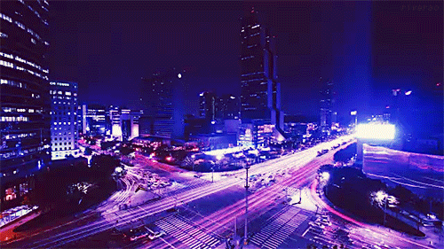
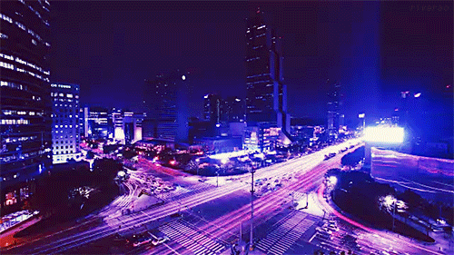
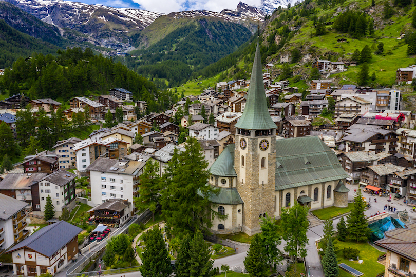
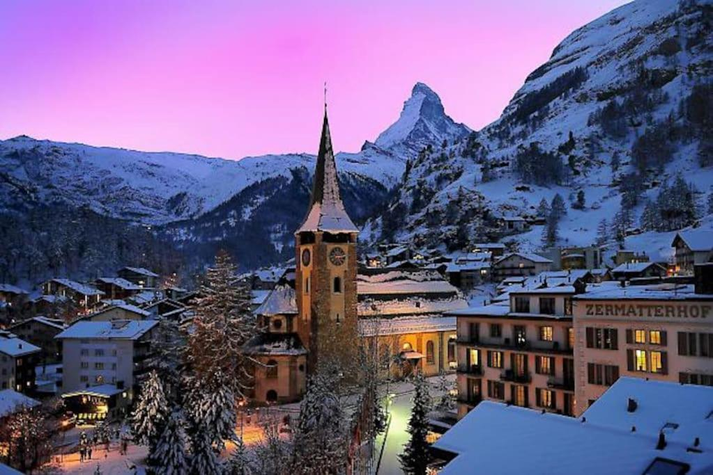
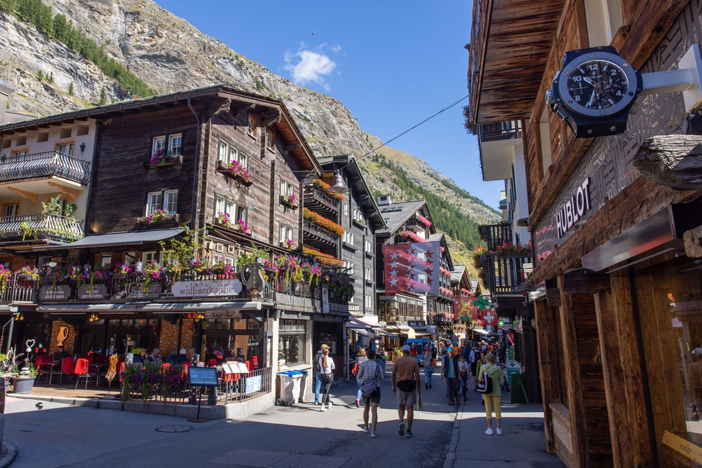
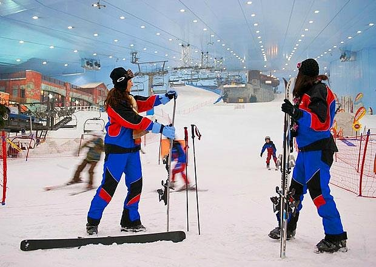

Travel
Seoul, South Korea
Geographical Location: Asia
 

Seoul is the capital of South Korea and it is a city enshrined in history. The Han river runs through Seoul, dividing it into two parts. Additionally, there are many mountains in and around Seoul, making it so the city has a lot of hills.
Seoul is the perfect blend of modern and historical with five royal palaces and several shrines. Additionally, there are plenty of fun shopping areas in Seoul such as Hongdae, Insadong, and Gangam. Lastly, Seoul is a city of cafes with one on almost every block and several fun cafe experiences to try out, especially in Yeonnam.
Photo Gallery

Enjoy panoramic views of Seoul from Namsan Tower.

With tons of interesting stores, Hongdae is a great place to shop and experience the nightlife.

Learn about the history of Seoul and visit Gyeongbokgung palace, one of the many palaces Seoul has to offer.

Try Korean street food for a low cost by visiting Gwangjang market.

Go to Ikseondong to try several unique cafes and stroll around traditional hanok style buildings.
Barcelona, Spain
Geographical Location: Europe


Barcelona is located on the northeastern coast of Spain and is the capital of Catalonia. Barcelona is home to 1.6 million people and contains multiple different historical landmarks and interesting architecture.
Barcelona is famous for its notable architects including Antoni Gaudí and Lluís Domènech i Montaner. These architects built La Sagrada Familia, Park Guell, and Palau de la Música Catalana which are among the most famous constructions in Barcelona. Both architects are famous for their Modernisme style buildings notable for their distinct colors and organic shapes.
Photo Gallery

A view of Barcelona with La Sagrada Familia in the center.

A view of some mosaic in Park Güell.

Barceloneta beach invites visitors to go for a walk along the promenade.

Pont del Bisbe in Barcelona's Gothic Quarter.

The Arc de triomf in Barcelona.
Sofia, Bulgaria
Geographical Location: Europe


Sofia is the capital city of Bulgaria, a country located in Eastern Europe. It is part of the European Union and the primary language spoken is Bulgarian. The city's population is around 1.3 million. In addition to its urban structures, Sofia also contains a mountain peak called “Vitosha”.
Vitosha is located 30 minutes from the capital's center, and can be reached by foot, car, and by lift. The peak has an elevation of 7,520 feet and during the summer months the average temperature is around 64 degrees fahrenheit. This makes it a great sight for any type of traveler who seeks the outdoors.
Photo Gallery

Located in the city's center, St. Alexander Nevsky Cathedral displays some of Sofia's grand architecture.

Vitosha boulevard is often packed with both locals and tourists and contains shops, restaurants, live music, and great views.

The peak of Vitosha mountain offers a great view of Sofia from above.

A picturesque street giving insight into the locals' lives and the city's public transport trams.

One of Sofia's famous roads, this street is paved with an interesting material: yellow cobblestones. Being one of the first streets in the entire city, it was first paved in 1907 and continues to be maintained to this day.
Zermatt, Switzerland
Geographical Location: Europe


Zermatt is a beautiful place, with 365 degree views of the mountains. It's known for its famous mountain “the Matterhorn,” which is visible from nearly everywhere in the town. The town is vibrant, filled with patrons walking around, shopping for the most high quality snow boots, eating hot Rosti and drinking wine
The skiing in Zermatt is unparalleled. Every day in the winter you can find people skiing all day. When it snows, the mountain becomes even more crowded, with skiers flocking to the mountain from around the country and the world.
Photo Gallery

River flowing through Zermatt.
View of the Zermatt town in the summer.
The Matterhorn and clocktower at dusk.
Zermatt on the ground.

Zermatt at night.
Dubai, United Arab Emirates
Geographical Location: Asia


Dubai is a growing attraction for many travelers. This city is located in the United Arab Emirates on the southeastern coast of the Persian Gulf. Dubai is renowned for its iconic architecture, luxurious lifestyle, and rapid development. Dubai is a global hub for tourism, innovation, and business.
Dubai is a futuristic oasis in the middle of the desert. This city offers a unique blend of tradition and modernity. Towering skyscrapers offer a breathtaking skyline view. Dubai contains iconic buildings, malls, and islands that fuel its tourism.
Photo Gallery

Reaching into the clouds, witness the tallest building in the world the Burj Khalifa.

Located just off the coastline, the Burj Al Arab boasts a unique design and world-class service.

Nestled in the heart of downtown Dubai, the Dubai Mall offers a wide range of experiences from shopping, dining, and entertainment.

An engineering marvel, the palm islands are shaped like a palm tree and provides an additional area for tourists.
A snowy escape, Ski Dubai offers an indoor winter retreat from the harsh desert heat.
Grand Canyon, USA
Geographical Location: North America


The Grand Canyon is a natural geological formation located in the state of Arizona. It is a steep-sided canyon carved by the Colorado River over millions of years. The canyon is known for its size, vibrant and varied colors, and intricate rock formations. It is one of the most famous and visited natural landmarks in the United States and around the world.
Though the Grand Canyon is one of the most iconic places to travel, there are many dangers that come from such a terrain. Between 2010 and 2020, 134 have died, mainly due to extreme heat. You can see below, examples of people getting hurt due to the heat and carelessness.
Photo Gallery

Overlook the Grand Canyon snowy cliffs while the sun is setting

Grand Canyon valley river during the day

Cliff overlooking the rest of the Grand Canyon

A mountain goat looking at the camera standing on top of rocks

Grand Canyon valley waterfall with trees